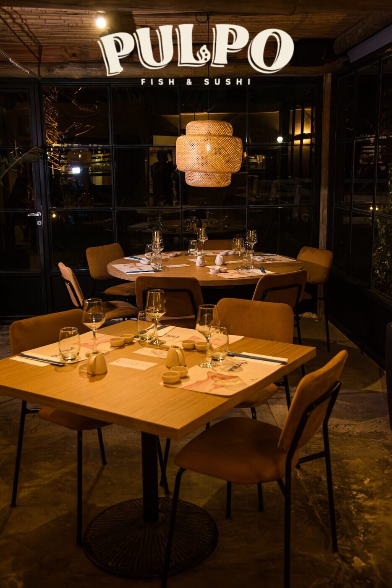

Bodegas
Presentación y encuentro con productores.
Evento de presentación
de producción biodinámica
Un encuentro para compartir la esencia del vino desde la tierra, el respeto y el equilibrio natural.

@pulposushiLa experiencia
Presentación y encuentro con productores.
Selección de vinos de producción biodinámica.
Alimentos y degustación de sushi.
Una ambientación pensada para acompañar el encuentro.
Presentación
Sin Catálogo reúne proyectos con identidad, producción consciente y una relación auténtica con el territorio.
Acompañan
Unidas por acciones concretas para el cuidado ambiental. Tocá cada marca para conocer su historia, sus productos y sus redes.
Cómo llegar

Sábado 3 de octubre · 13.20 hs Schweitzer 9436, Fisherton Entrada · $65.000
Evento con cupos limitados · Reservá tu lugar Ver ubicación